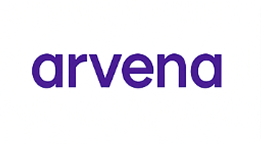
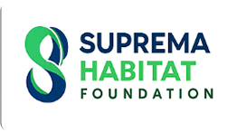

Empresas parceiras da Conecta Local !



Se você precisa de aulas particulares, de ajuda para fazer compras ou para levar os animais de estimação para passear, mas também consegue realizar essas e outras atividades, venha fazer parte da nossa comunidade. Aqui, uma mão lava a outra. Sempre prezamos pelo bem do próximo. Você pode tanto oferecer um serviço para a comunidade quanto contratar alguém para te ajudar.
Para se voluntariar, é muito simples! Basta criar um cadastro em nosso sistema e acessar a sessão “Seja Voluntário”. Depois, é só escolher o serviço no qual você deseja se voluntariar. Na página do serviço escolhido, você verá mais detalhes sobre como pode ajudar. Suas informações aparecerão em uma tabela, na parte inferior da sessão, onde todas as pessoas que precisam de ajuda poderão ver seu contato e entrar em contato com você.
Para pedir ajuda, é muito simples! Basta criar um cadastro em nosso sistema e acessar a sessão “Peça Ajuda”. Depois, é só escolher o serviço com o qual você precisa de ajuda. Na página do serviço escolhido, você verá mais informações sobre ele e os dados dos voluntários na parte inferior. Os dados dos voluntários que se inscreveram aparecerão em uma tabela, na parte inferior da sessão, onde você poderá encontrar o contato da pessoa mais próxima de você.